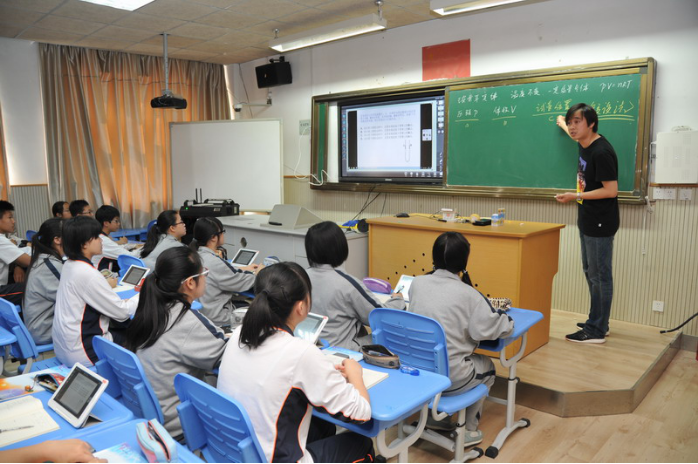
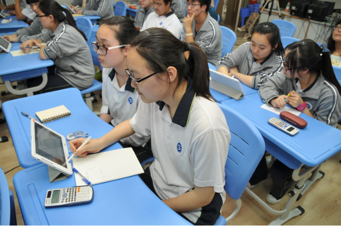
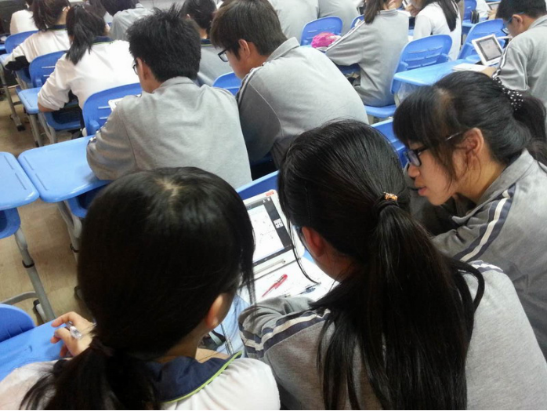

<返回新闻列表
关注教育信息化的发展 探索互联网环境下的教学——记长征中学现代教育技术互动课堂展示活动
[2015/06/05]
[查看原文]
2015年6月5日上午，长征中学现代教育技术互动课堂展示活动在学校二楼多媒体教室举行，共展示了精彩的三节课，分别由我校青年教师叶澜、李金明、金旭乔执教的高中物理、数学、生物课。来自我区部分高中教学联盟成员学校的老师和青浦区东湖高级中学以及本校教师济济一堂观摩了展示课，感受到发生在身边的真实互动课堂。
长征中学引进的K6KT互联网教学平台，使“翻转课堂式”教学模式变得可行和现实。该平台能有效增加学生和教师互动和个性化沟通，并创造学生自主学习的环境，学生手中的平板电脑为学生提供充分的思维空间和习题空间，教师将习题直接下发到学生手中的平板电脑上，学生当场答题完成之后，直接回馈到教师的终端机中，教师直接选取某位有典型问题的同学进行讲评，极大提升了课堂的有效性。

高中理科内容多为实验性学科，也强调空间立体思维的培养，如何合理运用现代信息技术，为学科注入新的活力，使学生对学科感兴趣，从而发展到热爱自然科学，是教师的当务之急。叶澜老师的《玻意耳定律的应用》这节课很好地运用了K6KT平台，通过直观的短视频，形象化的当堂做图解题，化难为简，逐步引导学生开拓思路，掌握解决问题的方法，从对简单公式的记忆中取得一个飞跃，培养了学生观察问题、解决问题和动手能力，也适时达到了培养学生基本科学素养的教学目标。而李金明老师的《立体几何中的轨迹问题》利用信息化课堂将原本课堂里无法直接完成的立体图像演变过程直观地展现在学生面前，激发学生学习兴趣，而对于数学习题的处理，也通过K6KT平台进行了实时反馈，大大的提升教学效率。金旭乔老师的《遗传计算复习》一课也因为有了新平台，大大改观生物学科的课堂教学效率，各种题例和信息的共享，实验的模拟和反馈，都极大提升了生物课堂教学的效果。

俗话说“事实胜于雄辩”，观摩老师和课题组成员一起愉快分享“现代教育技术互动课堂建设的实践和研究”阶段成果。网络课堂软件的实地应用，利用多点触控的平板电脑和摄像头互相配合，利用信息网络的分享优势进行数据收集操作等等，课题组骨干成员在第二阶段的实践中，掌握了APP和DIS的优势和弱势，扬其长避其短，三堂课例给予我们的期待以积极的回应。 三节课呈现了互联网环境下的教学反馈的快捷性、艺术性和观赏性，更为重要的是提高了教学效益，引起了观课教师的极大兴趣，对于推动广大教师投身于现代教育技术的探索实践具有积极意义。
